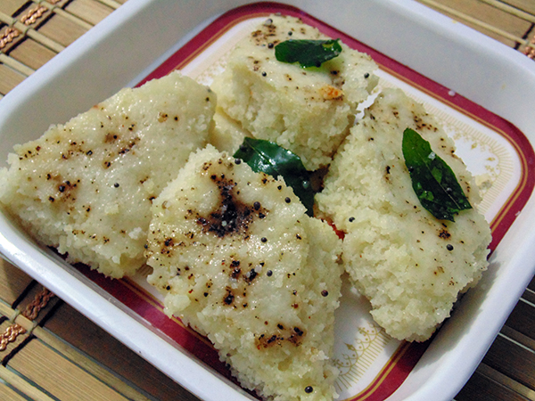

white Dhokla |
| Rateing |
| prep time:10 hours |
| cook time:30 minit |
| total time:10 hours 30 minit |
|  |
Ingredients: |
1.5 cup Rice (you can use jeerasar or boiled rice)
1/2 cup Urad dal (Black gram dal)
Salt to taste
2 cup Curd or 4 cup Butter milk
1 small packet Eno or 1.5 tsp Baking soda
1 tbsp Black pepper powder
Water according to requirement
|
Instructions: |
| Wash and soak rice and urad dal in water for 4-5 hour separately. After 4-5 hours, drain water from both. Grind it in mixture jar with butter milk and water according requirement. Grind till it become medium batter. It should not be very thick or thin. Keep it in a warm place for 5-6 hour for fermentation. In a bowl add salt and eno in it. Mix properly. Heat water in a steamer at medium flame. Grease plate with oil. Now pour approx 2 cup batter in it. Sprinkle black pepper powder on it. Cover lid and cook for approx 15 minutes. Open and check with knife. Remove plate from steamer and cut into diamond pieces. |
video: |